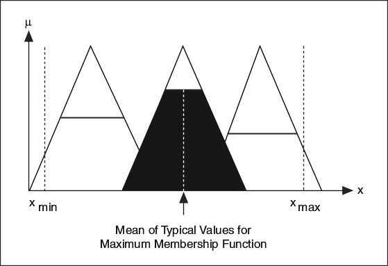

Use the Mean of Maximum (MoM) defuzzification method for pattern recognition applications. This defuzzification method calculates the most plausible result. Rather than averaging the degrees of membership of the output linguistic terms, the MoM defuzzification method selects the typical value of the most valid output linguistic term.
The following image illustrates the MoM defuzzification method.
